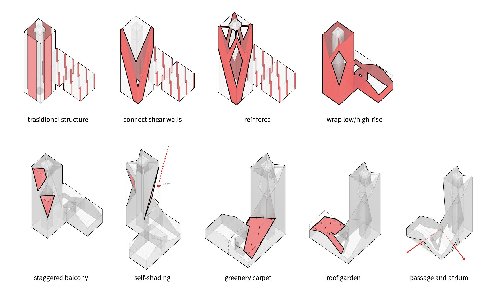
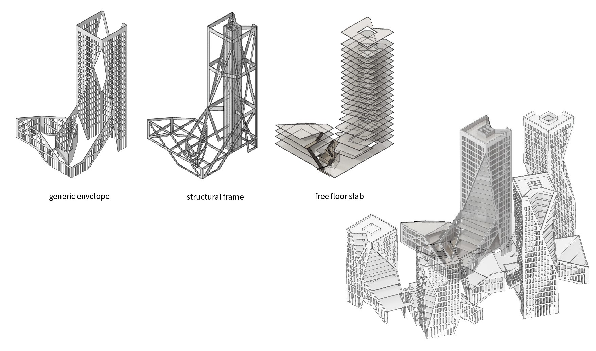
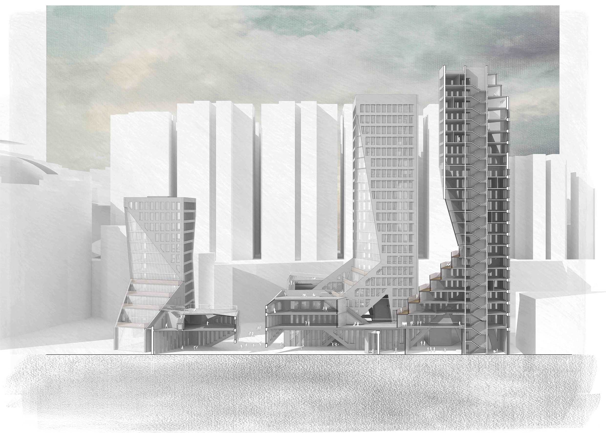
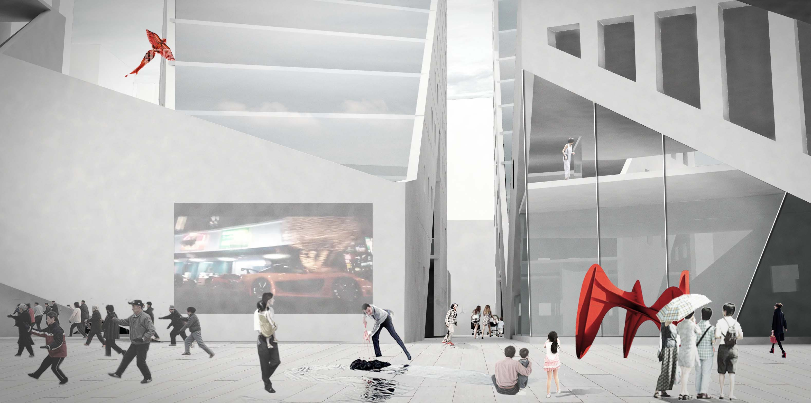
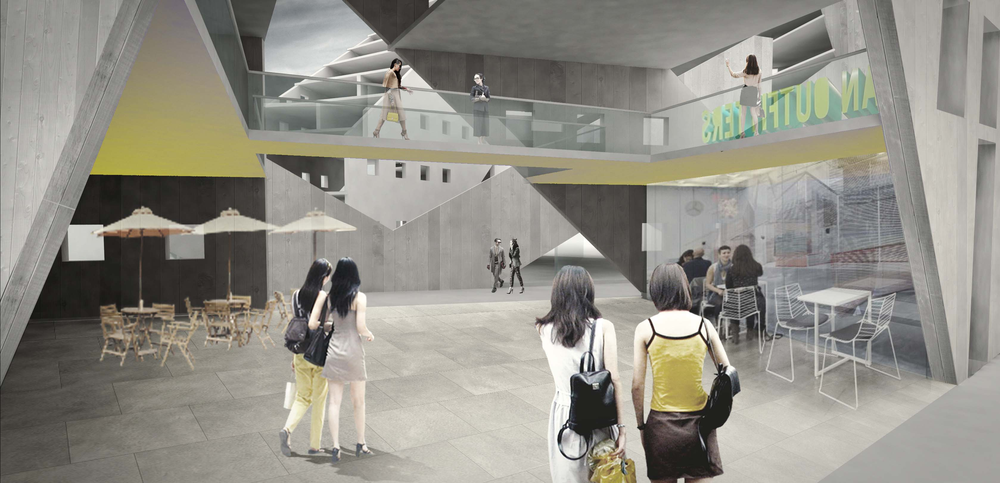
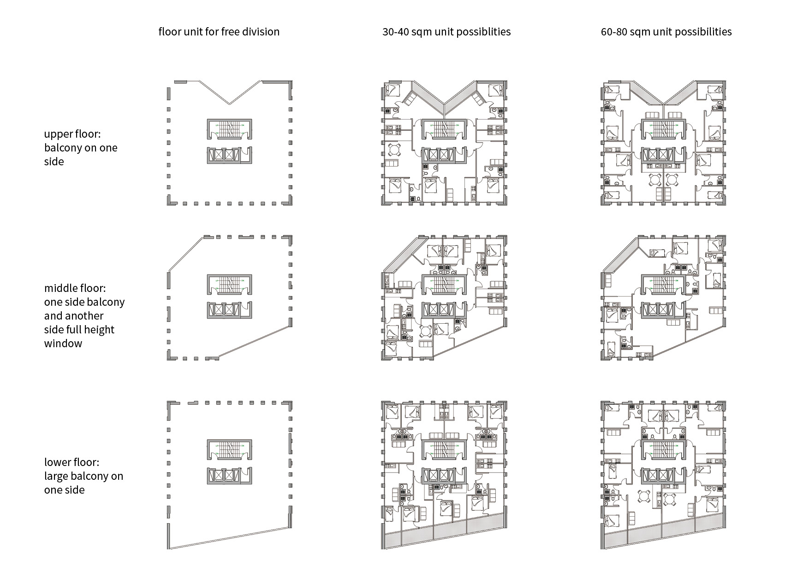
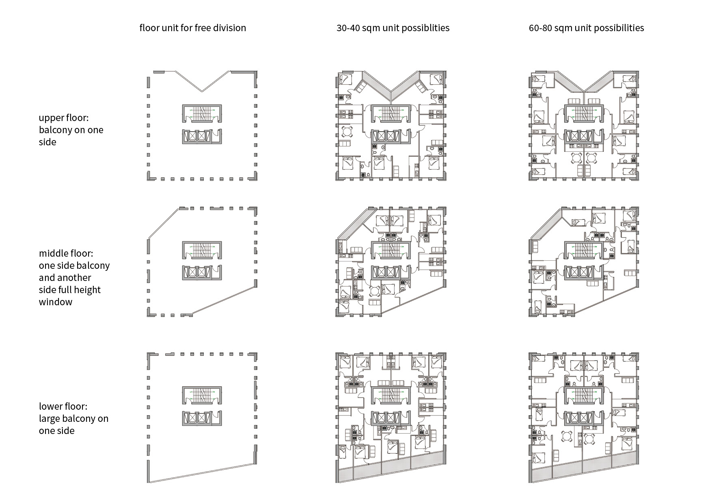

LOCATION
Pak Fuk Road, North Point,
Hong Kong
DESIGN TIME
2015.5 (acdemic year 3)
PROFESSOR
Yan Gao, HKU
PROJECT TYPE
individual
The project aims to design a hybridized housing community with the ability to change internal space and layout without jeopardizing the external coherence. The façade to the street remain as independent self-sufficient layer so that the coherence of the streetscape can be maintained while keeping the internal flexibility.
Structurally, the tectonic typology of residential towers is turned inside-out by adopting shear wall system at the peripheral. The skin is the structure. This structural exoskeleton creates highly flexible floor spaces free from columns or internal load-bearing walls. The floor plan may possibly be arranged according to individual needs of future residents. The only constrain to the envelope is in structure. By analyzing the force condition, a structural frame is overlapped onto the skin, resulting in the final version of the two-layer shear wall.
     
